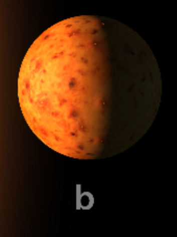

TRAPPIST-1 b

TRAPPIST-1 b es el planeta más cercano a su estrella. Es un mundo rocoso con un tamaño parecido al de la Tierra.
Características
- Tipo: planeta rocoso.
- Periodo orbital: aproximadamente 1.51 días terrestres.
- Ubicación: es el primero de los siete planetas.
- Recibe una gran cantidad de energía de su estrella por su cercanía.
Dato interesante
Un año en este planeta dura aproximadamente un día y medio de la Tierra, porque completa su órbita muy rápidamente.
¿Podría tener vida?
Es poco favorable para la vida como la conocemos debido a la intensa energía que recibe. No se ha confirmado que tenga condiciones habitables.
Regresar a los planetas Siguiente planeta